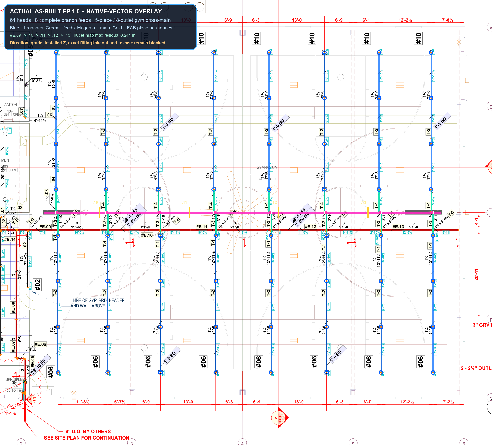
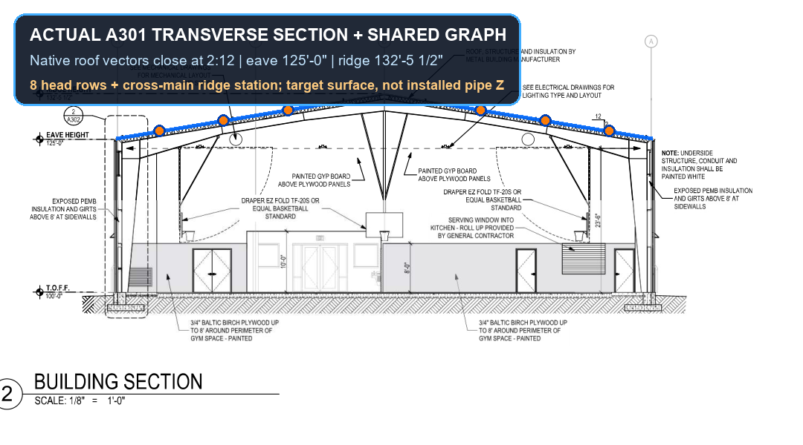
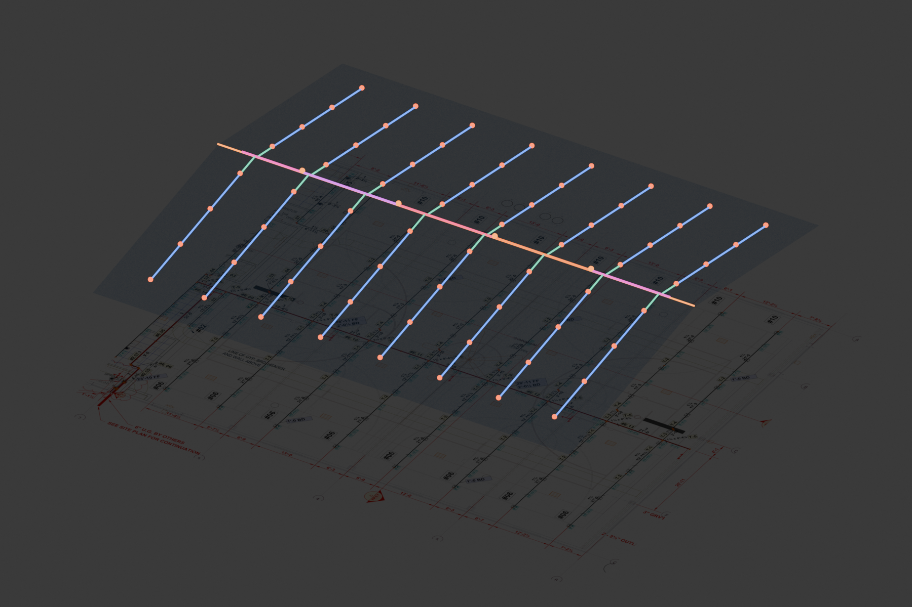

Top plan — actual as-built FP 1.0 underlay

Boys & Girls Club Community Center, Brigham City. This replaces the old synthetic 8 × 8 dot diagram. Every visible proof below is bound to actual project PDFs and the native fabrication package; the overlay comes from deterministic PDF vectors and typed FAB rows, not image generation.



Blue and green are source-registered target centerlines. The five-color ridge chain is #E.09 through #E.13; gold markers are registered piece boundaries. These are deliberately not presented as manufacturer part solids or installed Z.
Receipt429b2a8d459c0421045debb2a7c21d53749924d97a96d967a9a4d591156b6c0c
Truth boundary: this proves the gym plan coordinates, eight branch feeds, the scoped #E.09 through #E.13 piece order and boundaries, eight native FAB outlet identities, and 1¼-inch / 3-inch Schedule 10 size identities. It does not promote the complete #E line, exact fitting takeout, manufacturer part or bracket geometry, helical threads, thread engagement or tolerances, mating fit, direction, grade, installed Z, compliance, field release, or VPS release.